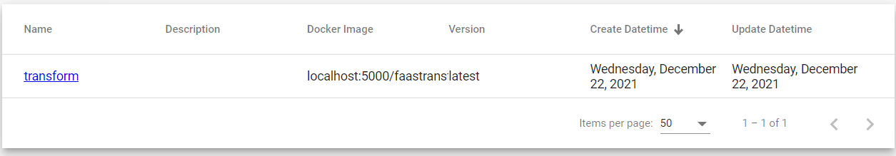

Web portal
Warning
Make sure your working environment is properly configured.
A Web portal is available at the following address. It can be used by developers to manage functions. Following chapters describe how functions can easily be managed.
Publish a function
Warning
Before publishing a function, it should be available in an online store for example DockerHub. For more information please refer to this chapter.
In the website, click on the Add a function button and fill in the form with the following information and click on Create.
- Name : Name of the function for example
test. - Description : A short description.
- Image: Name of the Docker image for example :
simpleidserver/faastransform. - Version : Version of the Docker image for example :
0.0.5.

The function will be published and displayed in the table.

Unpublish a function
Navigate to the function and click on the Delete button present in the Information tab.
The function will be unpublished and removed from the table.

Invoke a function
Navigate to the function and click on the Invoke tab.
There are two types of parameter :
- Configuration parameters : The content is similar to what can be found in configuration files (web.conf or app.conf) for example : mapping rules between Input and Output fields or ConnectionString.
- Input parameters : Input parameters directly passed to the function.
If faastransform is published, it can be invoked like this :
- Output parameters : Add a new parameter and set the first field value to
firstname, and specifyFIRSTNAMEin the second field. - Input parameter : Specify the following JSON content.
{ "firstname" : "sid" }
Click on the Launch button. The JSON object above will be transformed into a new object which looks like to something like this :
{ "FIRSTNAME": "sid" }

Monitor a function
Navigate to the function and click on the Monitoring tab.
There are several panels displayed in the UI. Each of them enable developers to follow the performance of the published function for examples : CPU Usage, Memory Usage or Number of request.